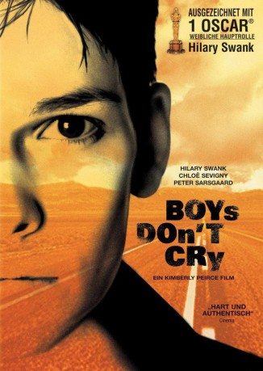

#2221 Boys Don't Cry
Auszeichnungen: 1 Oscars gewonnen für 1 Oscars nominiert 1 GoldenGlobes gewonnen
 
 IMDB-Wertung: 7.6 / 10
IMDB-Wertung: 7.6 / 10  Metascore: 86
Metascore: 86 
Brandon Teena, ein junger Transsexueller, geboren als Teena Renae Brandon, ist äußerlich eine junge Frau. Seinem Geschlechts- und Körperempfinden als Mann folgend, kleidet er sich männlich, um die gefühlte Identität auszuleben. Unter männlichem Namen verlässt er seinen Heimatort, um in der US-amerikanischen Provinz ein neues Leben zu beginnen. In einem kleinen Ort freundet er sich mit einer jugendlichen Clique an, John, Tom, Candace, Kate und Lana. Bald darauf ist er in der Clique akzeptiert und verliebt sich in Lana.
Jahr: 1999
Dauer: 118 Minuten
FSK: 16
Land: USA Studio: Fox Searchlight PicturesTonspuren: DTS - ,
Untertitel: Deutsch,
Auflösung: 1080p (1920x1040) Größe: 8192 MB
Genre: Biographie, Drama, Liebe
Regisseur: Kimberly Peirce
Drehbuch: Kimberly Peirce, Andy Bienen
Soundtrack: Nathan Larson
Darsteller:
 Hilary Swank als Brandon Teena
Hilary Swank als Brandon Teena Chloë Sevigny als Lana Tisdel
Chloë Sevigny als Lana Tisdel Peter Sarsgaard als John Lotter
Peter Sarsgaard als John Lotter Brendan Sexton III als Tom Nissen
Brendan Sexton III als Tom Nissen- Alicia Goranson als Candace
 Alison Folland als Kate
Alison Folland als Kate Jeannetta Arnette als Lana's Mom
Jeannetta Arnette als Lana's Mom Rob Campbell als Brian
Rob Campbell als Brian Matt McGrath als Lonny
Matt McGrath als Lonny- Jerry Haynes als Judge
 Libby Villari als Nurse
Libby Villari als Nurse- Paige Carl Griggs als Dave - Deputy
- Gail Cronauer als Clerk
- Guilford Adams als Teena Brandon's Father , uncredited
- Ryan Thomas Brockington als Kiss , uncredited
- Gabriel Horn als Lester - Restraining Order Guy , uncredited
- Gavin Perry als Deputy , uncredited
- Caitlin Wehrle als Valley Girl , uncredited
- Cheyenne Rushing als Nicole
- Robert Prentiss als Trucker
- Josh Ridgway als Kwik Stop Cashier
- Craig Erickson als Trucker in Kwik Stop
- Stephanie Sechrist als April
- Lou Perryman als Sheriff
- Lisa Renee Wilson als Pam
- Jackson Kane als Sam Phillips
- Joseph Gibson als Tom
- Michael Tripp als Nerdy Teen
- Shana McClendon als Girl in Car
- Chad Briley als Extra , uncredited
- Christophe Dahlkvist als Truck Driver , uncredited
- Michelle Fairbanks als Girl in Car , uncredited
- Robert A. Steffenino als Bartender , uncredited
Datei: X:\1999\Boys Don't Cry (1999, FSK16, 1920x1040).mkv seit 21.10.2015
Festplatte: HD 1996-2002
 Es gibt insgesamt 81 Filme in der Gruppe '1999'
Es gibt insgesamt 81 Filme in der Gruppe '1999'